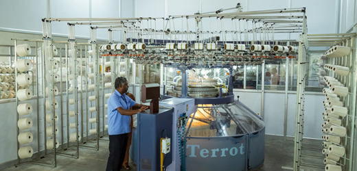
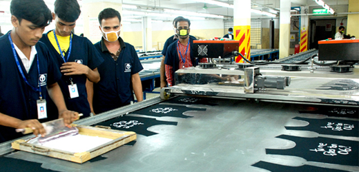
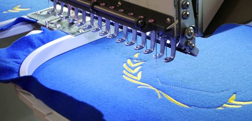
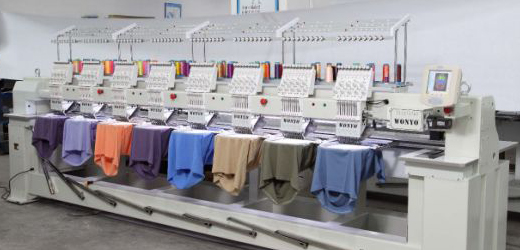
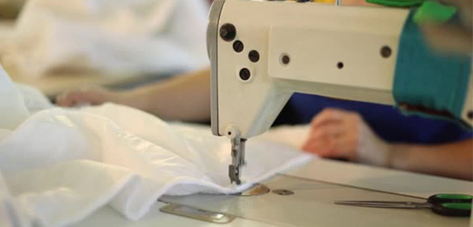
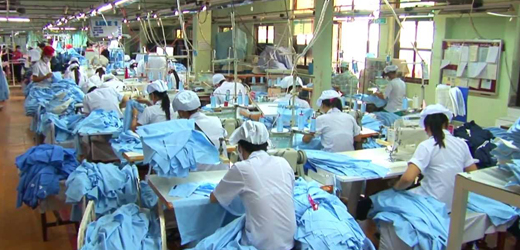

INFRASTRUCTURE
Samsaro Exports has an excellent garment production unit which is well
designed with ample workspace, adequate natural lighting and extensive
ventilations. Samsaro Exports in-house garment production facility is
well equipped with latest state of the art machinery in fabric cutting,
fusing, sewing, finishing & packing, resulting in better quality &
higher efficiency in productivity. Every style is time & method
engineered to improve productivity & achieve delivery deadlines.
KNITTING
The Samsaro Exports has Own Knitting machines, which is Mayor & Cie,
Germany. It can produce around 2000 KGS of fabric per day. We can do all
types of knitted fabrics as per our customer specification and style,
which includes Single Jersey, Interlock, French Terry and all types of
Ribs, Jackquard designs,Loop Knit, Fleece, Blended, Auto stripes.


PRINTING
Our proficiency lies in making a wide range of printing patterns
possible. Towards this, we have table & machine printing facility that
enable a diverse variety of prints.
Pigment print, Plastisol print, Discharge print, Glitter Print, Flock
print, Foam print, Digital Transfer print, High Density print , etc..,


EMBROIDERY
The highly advanced Tajima machine with 20 heads makes it easy for us to
craft the finest embroidery designs.
The embroidery division is equipped with the latest machines from
TAJIMA-(Japan Make).These automated embroidery machines elegantly handle
any design with Punching ,Designing & Applique Cutting.


GARMENTING
The garments are manufactured in most sophisticated machines using the
latest state of the art technology in our INHOUSED PRODUCTION UNIT. Our
wide range of machineries include JUKI, BROTHER, PEGASUS. Our Production
is the key for success which keeps us growing in this competitive
industry. Our production unit is supported by 100 sewing machines.


PACKING
They are packed neatly in the designated packs and placed inside the
carton or hanger racks for dispatch.